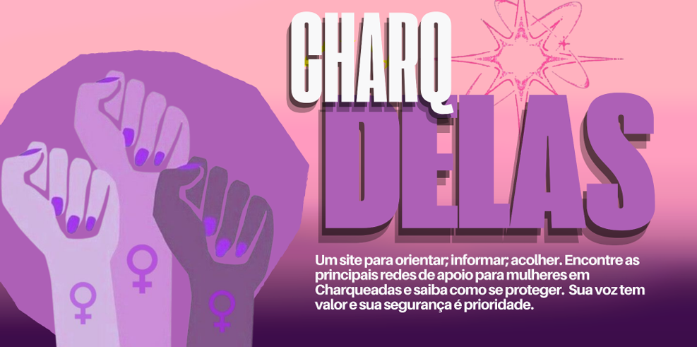

A Patrulha Maria da Penha, não apenas em Charqueadas, como nas demais localidades que a abrangem, tem como objetivo verificar o cumprimento das medidas protetivas e das mulheres vítimas de violência, para implementar maior segurança. A polícia militar acompanha essas mulheres por meio de visitas, aqui em Charqueadas, mensais, segundo a Soldada Márcia em abril de 2026, e são opcionais, a critério da mulher. Para esse procedimento é necessário uma medida protetiva no Poder Judiciário.
O violentrômetro é um recurso que ajuda a prevenir, orientar e conscientizar sobre a violência de gênero. Ele divide as situações em três níveis:
🟡 Amarelo (Cuidado):
🟠 Laranja (Reaja e peça ajuda):
🔴 Vermelho (Perigo de morte)
Na legislação brasileira, existem cinco principais tipos de violência contra a mulher. A seguir, suas características e a porcentagem de ocorrências em Charqueadas (fevereiro de 2026):
Violência Física (32%)
É a forma mais visível, pois agride diretamente o corpo e a saúde da vítima.
Violência Psicológica (64%)
Relaciona-se ao controle do corpo e da sexualidade da vítima.
Violência Patrimonial (0%)
Envolve controle financeiro e destruição de bens e documentos.
Violência Moral (64%)
Afeta a reputação da vítima por meio de calúnia, difamação ou injúria
Nota:Essas violências raramente acontecem de forma isolada. Identificá-las é essencial para reconhecer que se trata de um crime.
O ciclo da violência doméstica é um padrão repetitivo que acontece em muitos relacionamentos abusivos. Ele é dividido em três fases:
1. Aumento da tensão
Nessa fase começam os sinais de agressividade. O agressor pode:
A vítima geralmente tenta evitar conflitos para impedir a agressão.
2. Explosão
A tensão acumulada chega ao limite e ocorre a violência direta.
3. Lua de mel
Após a agressão, o agressor demonstra arrependimento:
A vítima pode acreditar na mudança, seja por esperança ou medo, e o ciclo recomeça.
As medidas protetivas são decisões judiciais que têm como objetivo proteger a vítima de violência. Elas são determinadas por um juiz e podem incluir:
Essas medidas são fundamentais para garantir a segurança e a integridade da vítima.
Devido à grande quantidade dessas iniciativas, este espaço destaca os projetos de leis do município de Charqueadas.
Projetos locais:
Nota:
Este calendário reúne projetos de leis e ainda está em processo de organização.Como se proteger? Para onde correr?
Em situações de ameaça ou agressão, agir rapidamente é essencial para sua segurança.
Em caso de emergência:
🏠 Prevenção e apoio:
⚠️ Durante discussões:
🧳 Planeje um plano de fuga:
Estar preparada pode fazer toda a diferença em momentos de risco.
Este site começou em forma de artigo científico intitulado “Percepções femininas acerca da violência de gênero em Charqueadas (RS): reflexões a partir do contexto rio-grandense”, de autoria da aluna Júlia Cernicchiaro Moura, orientada por Daiane Nascimento e coorientada por Cintia Soares, proposto na matéria de PINC, no Instituto Estadual Educacional Assis Chateaubriand.
O site nasceu com o objetivo de romper a barreira do desconhecimento sobre a violência de gênero em Charqueadas.
Autor do site: Teilor Felipe Cruz da Rosa
adsdasdasdas